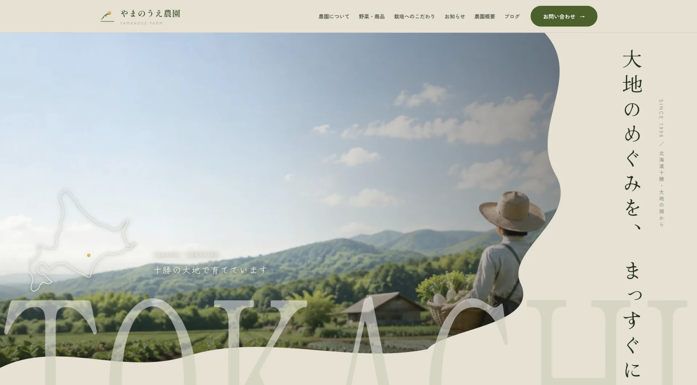
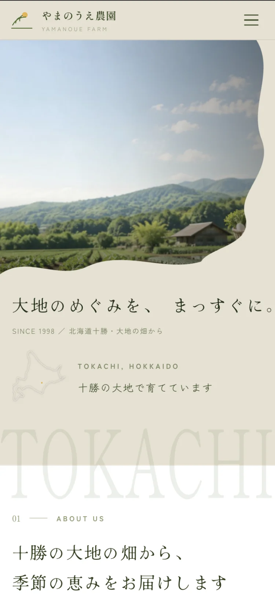

やまのうえ農園大地のめぐみを、まっすぐに。
北海道十勝の農園を想定してつくった、自主制作のサイトです。産地の風景で興味をもっていただくところから、野菜を選び、注文や問い合わせをするところまでを、迷わず進める流れにまとめました。パソコンとスマートフォン、どちらの画面も掲載しています。


担当範囲
コンセプトづくり・デザイン・制作まで全工程
- 想定
- 北海道十勝の農園（1998年創業・栽培面積 2.4ha の設定）
- 規模
- トップページ＋農園について・野菜と商品・栽培のこだわり・お知らせ・農園概要・ブログ・お問い合わせ
- 担当
- コンセプトづくりから制作まで全工程
- 画面
- パソコン・タブレット・スマートフォンに対応
01どんなサイトか
北海道十勝で野菜とお米をつくっている農園を想定してつくりました。トップページでは畑の写真を画面いっぱいに使い、右端に「大地のめぐみを、まっすぐに。」という言葉を添えています。どんな場所で、どんな人がつくっているのかが最初のひと目で伝わることを、一番の狙いにしました。
ページは、農園について・野菜と商品・栽培のこだわり・お知らせ・農園概要・ブログ・お問い合わせ。産地から直接お求めになる方が知りたいことを、ひととおり置いています。
02ご覧になる方の多くは、スマートフォン
産地から直接買えるサイトは、その大半がスマートフォンから見られます。パソコン向けの見た目をそのまま小さくしただけだと、文字が読めないほど縮んだり、横にはみ出して指で動かさないと読めなくなったりします。
このサイトは、画面の幅に合わせて写真と文字の並び方が組み替わるようにしてあります。パソコンでは縦書きだったキャッチコピーも、スマートフォンでは横書きに直しています。畑の写真の見え方はそのままなので、どちらで見ても受ける印象は変わりません。
メニューの項目は、スマートフォンでも減らしていません。栽培のこだわりや農園概要は、はじめての方が「ここから買っても大丈夫か」を確かめる材料になるページだからです。小さい画面では開閉式にまとめて、置き方だけを変えました。
03「雰囲気がいい」で終わらせない
産地の風景に惹かれても、何がいくらで買えるのかが分からないと、そこで止まってしまいます。旬の野菜セットやお米は、価格まで含めて早いうちに出るようにしました。気持ちが動いているうちに、買い方の話まで進めるためです。
お問い合わせは、入力フォームと一緒に電話番号と受付時間も並べています。数量や発送日をその場で確かめたい方には、電話のほうが早いことが多いためです。連絡手段をフォームだけに絞らないほうが、農産物の直売には合っていると考えました。
04季節ごとに、中身を入れ替えられる形に
農園は、時期によって出せるものが変わります。作って終わりのつくりにしてしまうと、旬が変わっても去年のままの案内が残り、見た方に「今もやっているのだろうか」と思わせてしまいます。
そこで、今の野菜のお知らせや畑の様子を足していける場所として、お知らせとブログを用意しました。載せる場所を増やしすぎていないのも同じ理由です。手の回らないページが並ぶほど、サイトは古びて見えてしまいます。
自主制作のため、掲載している農園の情報・商品・価格はすべて架空の設定です。